Exercise 1: Basic communication
Goal: connect two PCs through a switch and prove they can talk to each other using ping.
Step 1: Build the topology
PC0 and PC1 are each connected to one switch.
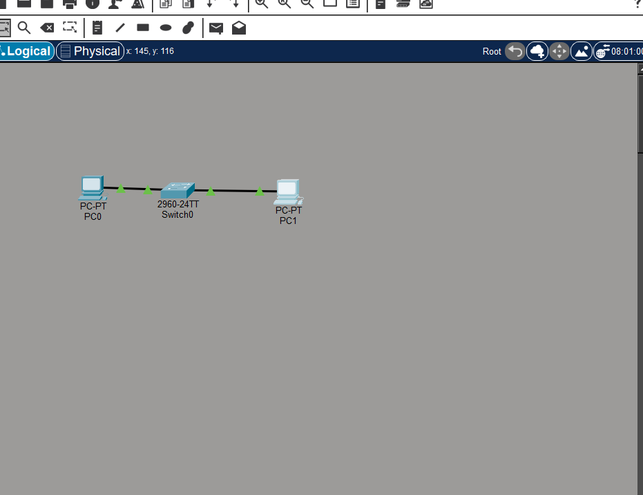
Step 2: Give each PC an IP address
Without an address a PC cannot take part in IPv4 communication. Both PCs must be on the same network.
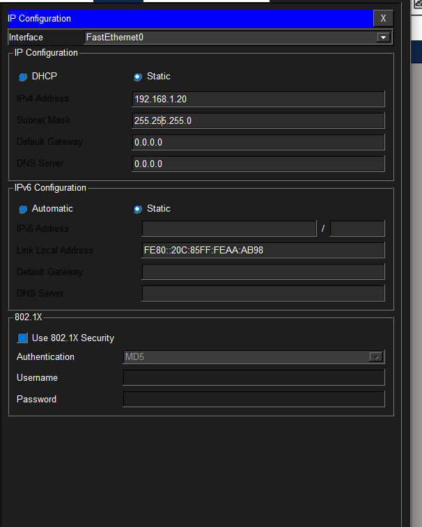
Step 3: Ping from PC0
A reply from PC1 shows that the path works and that ICMP echo messages are getting through.
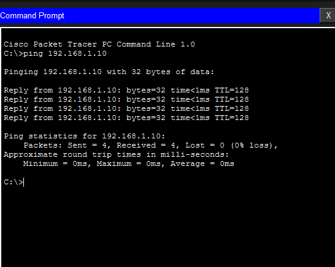
Step 4: Ping from PC1
Testing the other direction confirms the link works both ways.
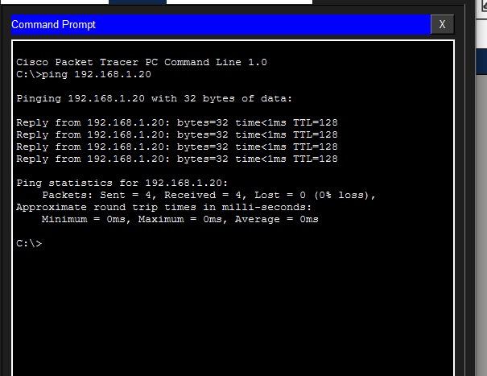
Exercise 2: MAC addresses and switching
Goal: look inside the local Ethernet network and watch the switch learn MAC addresses.
Step 1: Find the MAC address of PC0
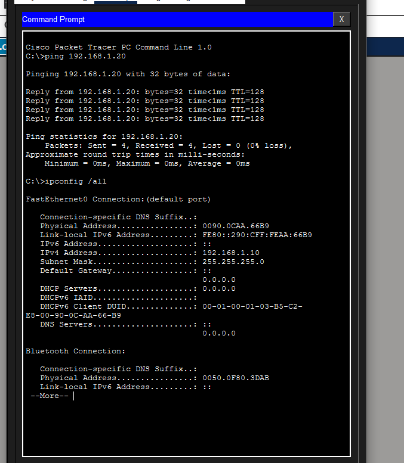
Step 2: Find the MAC address of PC1
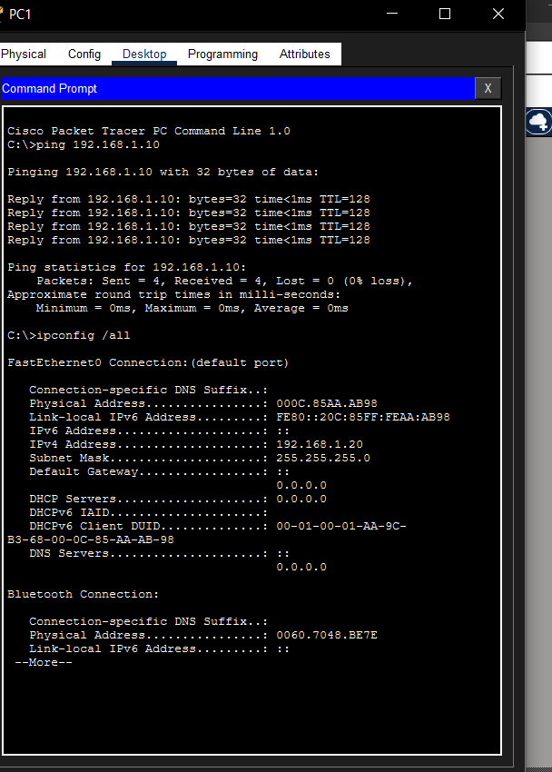
Step 3: Read the switch MAC table before any traffic
The table should be empty because the switch has not seen any frames yet.
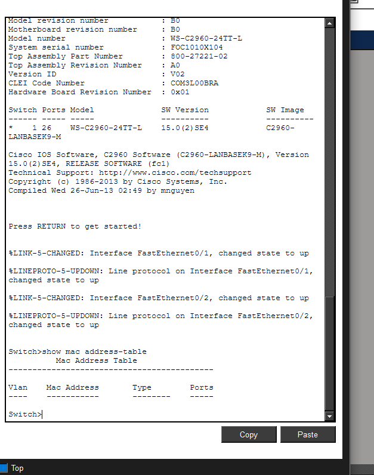
Step 4: Watch the frame arrive at the switch
In Simulation Mode, open the packet at the switch and read the source and destination MAC addresses.
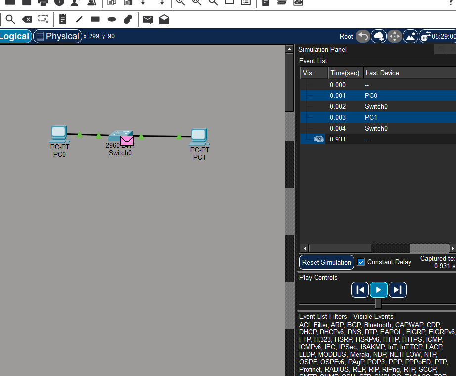
Step 5: The frame reaches PC1
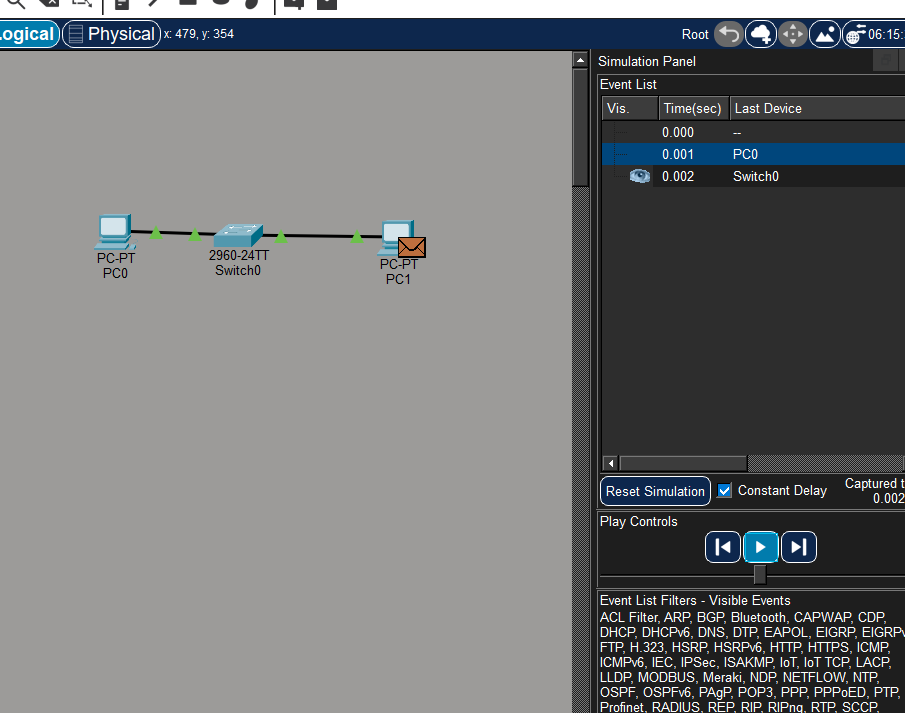
Step 6: Read the MAC table after the ping
The switch has now learned which port each MAC address sits behind.
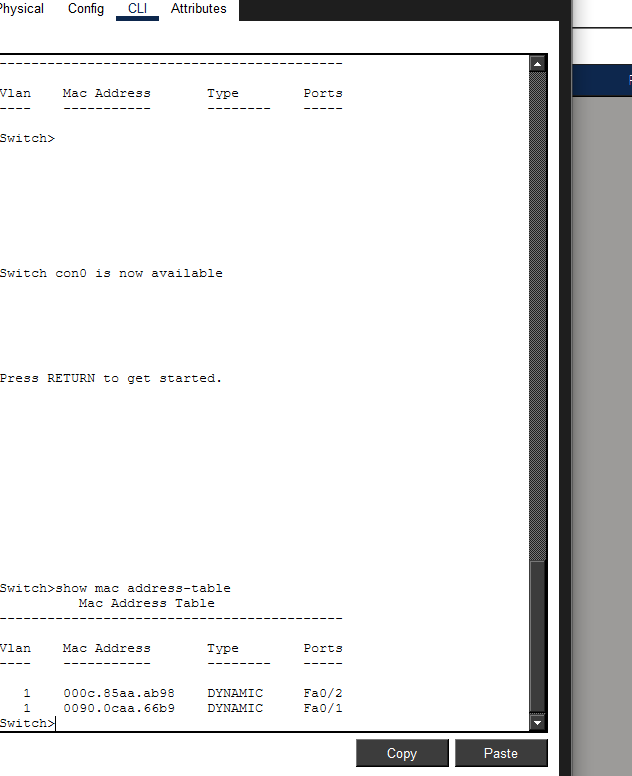
Step 7: Confirm the simulation succeeded
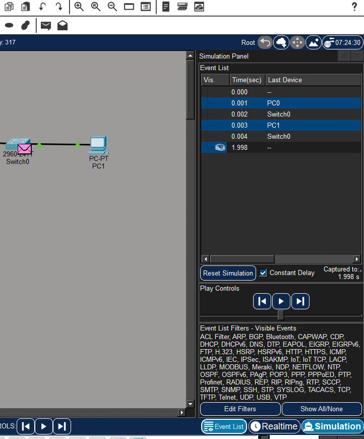